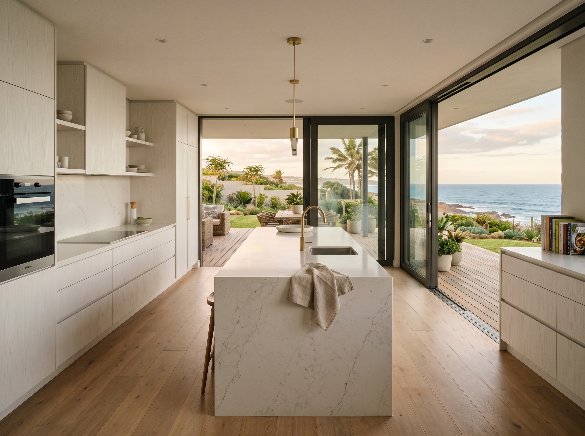
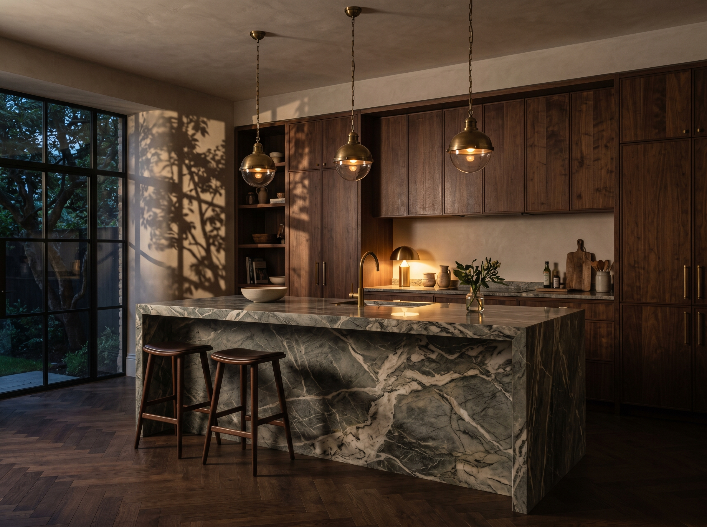
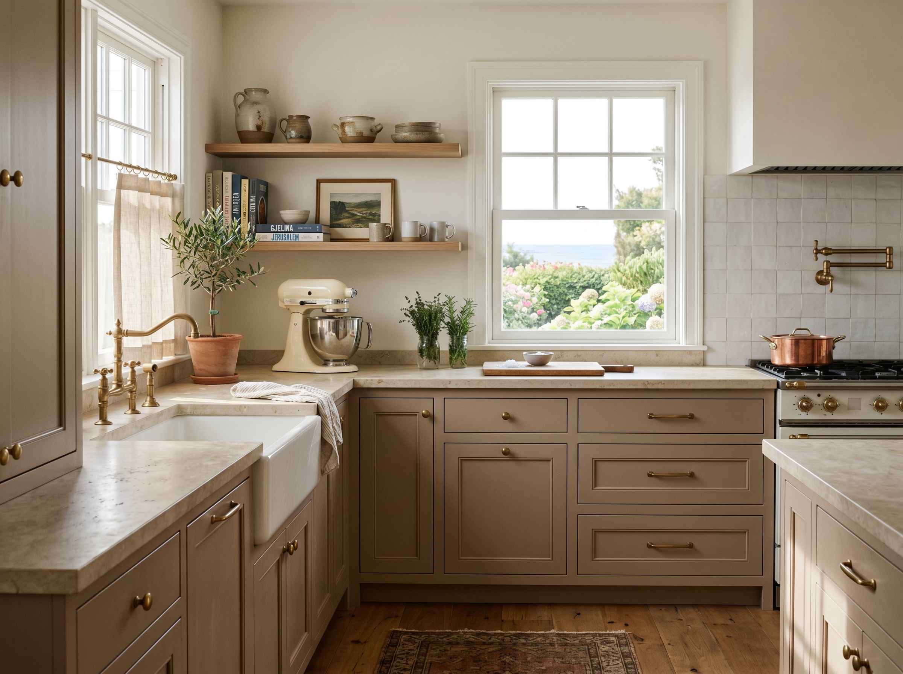
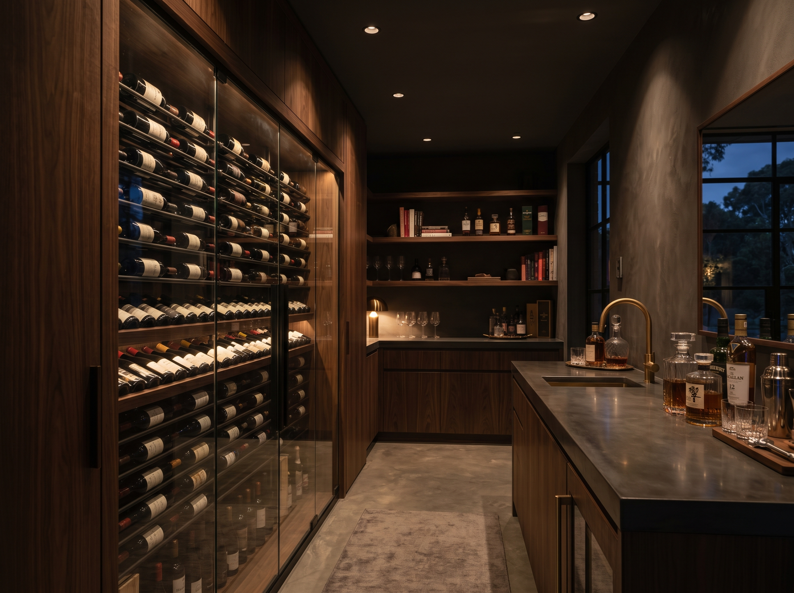
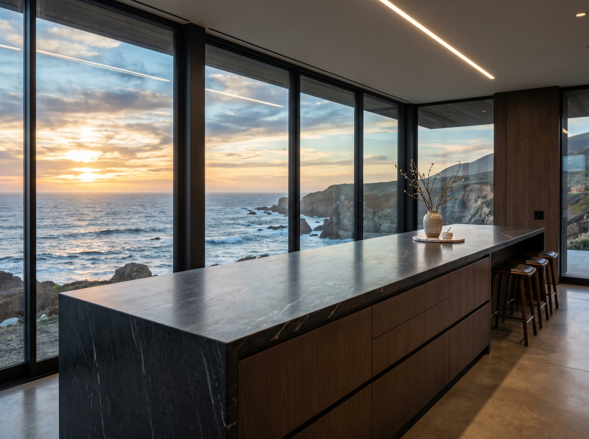

Each project on this page is its own composition — designed for the family it serves, made from materials chosen specifically for the home, installed with the care that earns the studio its name.

A new-build family home in upper Ballito, with a kitchen designed to open seamlessly onto the entertaining deck. White-oak veneer cabinetry, a Caesarstone island that doubles as a casual dining bench, and a hidden scullery that absorbs the daily mess.
The brief was for a kitchen that could host fifteen on a Saturday and feed two on a Tuesday — without either occasion feeling like a compromise.

A coastal home with mature trees framing the view. The kitchen needed to disappear when the room was being used to entertain, and step forward when food was being made. We composed it in dark walnut, with a marble island as the room's single quiet statement.
Concealed appliances, integrated lighting that responds to the time of day, and a hand-stitched leather pull on the pantry door as the room's one small luxury.
A 1990s home with good bones and a tired kitchen. The footprint stayed exactly where it was — every wall, every pipe, every electrical run. Everything else was composed afresh.
New cabinetry in a softer painted finish, honed limestone counters, brass hardware chosen to age gracefully, and a pantry built into what was previously dead space behind the fridge. The owners said it felt like a new house. We told them it was just the kitchen catching up.


A wine room and entertainment bar composed off an existing Rockwood kitchen. Dark joinery, integrated wine fridge with a glass enclosure, and a polished concrete counter that ages with the room.
Designed to host without competing — when guests arrive, the bar is the conversation. When the family is alone, it disappears back into the wall.
A single uninterrupted run of seven metres facing the ocean. The brief asked for one long counter without breaks — no island, no pillar, no compromise. The engineering followed the intent.
Hidden steel support, a single piece of granite shipped from the quarry as one slab, and storage carefully sequenced behind so the front face stays clean. The owners say they spend more time in the kitchen than any other room in the house.

Most of our work lives in private homes whose owners value their discretion. We share a fuller portfolio at the Discovery visit, where we can walk through projects relevant to your brief.
Request a Visit →